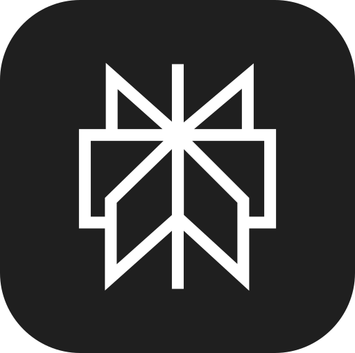

Add to Slack
Add to Slack

Monthly product newsletterReady to save
Workflow
Linear releases → open-rate check → newsletter draft in Resend
Save workflowNot now
The AI employee for the whole team.
Okou is an AI employee: give it a job, not a prompt. It connects to the tools you already use and does the work across marketing, sales, engineering, and operations, under your control.
Outputs
Okou builds Maya’s 🛍️ storefront. Hire it into a role, not a task. Okou proposes the workflows, runs the recurring ones on its own, and does the rest when you ask.
Build a one-page site for a coastal hotel called Litoral: a hero with the name, a short story, and three room tiles. Keep it minimal and elegant, then publish it and send me the link.
 Worked for 3m
Worked for 3m
It’s a single, self-contained page built in a minimal editorial style — a warm sand palette with a sea-green accent, a Cormorant Garamond serif for the brand voice, and photography instead of stock illustration. It includes the hero with the name and tagline, a short story, and three room tiles — Terrace, Garden and Sea View — each with its own description. It’s fully responsive, and the source lives at index.html if you’d like any tweaks to copy, colours or layout.
Cala Blanca · Since 1974
Eleven rooms on a lime-washed terrace, one olive tree, and the sea doing the talking. Breakfast is late and the afternoon is yours.
The rooms
“We came for two nights and rebooked from the terrace.”
Litoral · Cala Blanca · hola@litoral.example


Illustrative metrics for now. Replace with verified customer outcomes.
1,000+ connectors for the tools your team already uses, plus our own APIs and model picker. Far more arrives built in than with Codex or Claude Code — and Okou reaches it all the same way.

Shared workflows
One chat becomes something the whole team runs. One person works out how a job should get done. That becomes a workflow the rest of the team can run, and the workspace keeps it.
we should send a newsletter this month. you know what shipped — figure out the angle and write it
I’ll start from what actually shipped since the last send, then look at which of the last three newsletters got read.
Six things shipped. The send that opened with a customer story did far better than the changelog-style ones, so I’ll lead with the Notion sync and keep the rest as a short list underneath.
Subject lines, body copy and the segment are drafted. It goes to you as a draft in Resend, not to the list.
Piecing things together…
we should send a newsletter this month. you know what shipped — figure out the angle and write it
Okou · Worked for 2m
The draft is ready in Resend. This is the third month you have asked for it the same way, so I can keep the process for next time.
Linear releases → open-rate check → newsletter draft in Resend
AllAutomatedManual
Saved to the team’s workspace
vm0 ▾
Channels
@Okou what is the general CPC for AI product campaigns
General CPC benchmarks for AI product campaigns vary by channel.
📈 3👍 2
cc @Ethan @Scarlett — a click really is expensive.
🕑 Scheduled · every weekday at 09:00
2 causes crossed the 50-event threshold
Stripe webhook TypeError · 208 events · new this week
CSV export RangeError · 74 events · new this week
Total events1,111Root causes8Top group42.6%
taking the webhook one ✋
👀 4
@Okou customers keep asking for bulk export — write the spec and drop it here
41 asks last month, 23 of them from paying accounts. One page, with the current workaround and the open questions.
5 replies Last reply 12 minutes ago
🕑 Monthly product newsletter · 1st of the month at 09:00
October newsletter is drafted in Resend
Six things shipped since the September send. It opens on the Notion sync with a customer line, and the rest sits underneath as a short list.
Audience4,182SegmentProduct usersOpen rate, last 338%
subject B reads better. sending after standup — nobody had to write it this month.
📈 5
A reusable SOP for a task. Run, edit, or automate it.
AutomatedManualPrivatePublic⇅ Next run
The work starts arriving before anyone has to ask for it.
Someone asks for a piece of work the way they would ask a colleague, without spelling out the steps. Okou works out the angle and does the job in the open.
Okou offers to keep the run once it sees the job repeat. The instructions it followed and the tools it reached for are saved with it, in the team’s list.
The workflow belongs to the workspace, not to one person. A teammate runs it from chat or from Slack without rebuilding any of the setup.
Put it on a schedule or a trigger, and the work starts arriving before anyone has to ask for it.
The work still happens in an ordinary chat. The workflow is what is left behind afterwards, and every one your team keeps makes the next job shorter.
Shared context, personal permissions. What a workflow may reach stays tied to the person running it.
At once
Nothing waits in line, and nobody sits watching ten task queues. You ask once and come back when it is done.
You ask once
Get everything ready for Thursday’s launch.
 Okoucore agent
Okoucore agent
Four tasks, each in its own chat
Landing page
 Okou
Okou
Building the page
Launch newsletter
 Writersub-agent
Writersub-agent
Drafting the copy
CRM refresh
 Revenuesub-agent
Revenuesub-agent
Done, 412 records
Launch deck
 Okou
Okou
Pulling the numbers
Each chat reports back as its task finishes
Nothing here runs on your computer, so nothing stops when it sleeps, loses wifi or gets shut down mid-task.
Control
Decide what each Agent and each workflow can read, change, and approve. Permissions follow the person, not the automation.
Grant access one connector and one action at a time, per Agent. Nothing is reachable because something else already had it.
Sensitive writes wait for an explicit approval instead of running on their own.
Agents / Okou
AuthorizationProfileInstructions
 SlackPost to a channel
Allowed
SlackPost to a channel
Allowed
Every action a run takes is checked against this agent’s list before it leaves the sandbox. Okou can draft the mail, but it cannot send it.
Each run gets its own microVM, and it is destroyed when the run finishes.
Tokens are injected at the network layer, so the Agent never reads them.
Every run keeps an activity trail you can replay after the fact.
Positioning
 vs. Codex
vs. Codex
Codex helps one person with one coding task. Okou divides the work between several AIs, so different jobs move forward at the same time and your whole team can work together in one place.
 vs. ChatGPT
vs. ChatGPT
ChatGPT gives you an answer to paste somewhere. Okou is connected to the tools, so the answer arrives as a shipped artifact with an activity trail behind it.
 vs. Zapier
vs. Zapier
Zapier runs the rule you wrote. Okou reads the goal, picks the tools, and handles the multi-step work in between.
 vs. Claude Code
vs. Claude Code
Claude Code lives on one engineer’s machine. Okou runs in the cloud, connects to the team’s tools, and turns one person’s know-how into shared capability.
Proof
Replace these sample cards with approved customers, quotes, and verified outcomes.
Sample proof
“A website, analytics, and a portfolio started with a few runs instead of a weeks-long project.”
Sample proof
“The CRM stays current, and the next follow-up is ready before the conversation goes cold.”
Sample proof
“Our small studio can take on more of the work without turning every project into another hire.”
For high-agency teams
Turn the way your best people work into capacity the whole team can call on, with control over every action.